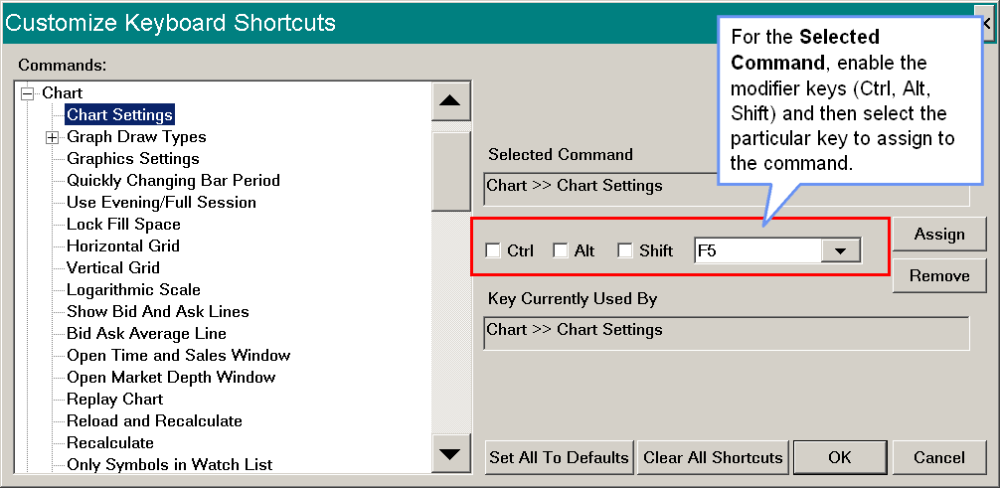

Global Settings Menu
- General Settings
- Graphic Settings
- Data/Trade Service Settings
- Quote Spreadsheet Settings
- Tool Settings
- Tool Configs
- Error Filter Settings
- Intraday File Update List
- Symbol Settings
- Customize Control Bars >> Control Bar 1-8
- Customize Menu Items
- Set System Date-Time from Server
- Customize Chart Header - Standard
- Customize Chart Header - Trade DOM
- Customize Chart Shortcut Menu
- Customize Chart Trade Menu
- Customize Chart Drawing Menu
- Customize Keyboard Shortcuts
- General Trade Settings
- Chart Trade Settings
- Chart DOM Settings
- Spreadsheet Settings
- Clear Alert Sound Queue
- Mute All Alert Sounds
- Create Desktop Shortcut
- Graphics Settings Configurations
- Intraday Data File Management
- Proxy Settings
- Time Zone Settings
General Settings (Global Settings menu)
Displays the General Settings window.
Graphic Settings (Global Settings menu)
Displays the Graphic Settings window.
Data/Trade Service Settings (Global Settings menu)
Displays the Data/Trade Service Settings window.
Quote Spreadsheet Settings (Global Settings menu)
Opens the Quote Spreadsheet Settings window.
Tool Settings (Global Settings menu)
Displays the General Tool Settings window which sets general tool settings and settings for the Chart Values tool.
For more information, refer to the General Tool Settings and Chart Values tool sections on the Chart Drawing Tools page.
Tool Configs (Global Settings menu)
The Tool Configuration menu lists all of the available drawing Tools. When you select a Tool, the configuration window for that Tool will be displayed. For complete details, refer to Drawing Tool Configuration.
Intraday File Update List (Global Settings menu)
This command displays the the Intraday File Update List window. Sierra Chart will maintain Intraday chart data for symbols entered into this window whether the charts are opened for those symbols or not, while connected to the data feed (File >> Connect to Data Feed).
Do not use the SCID file extension when entering symbols in this list. Just enter the symbol itself.
This list does not maintain data for Historical Daily charts.
To Add A Symbol To This List: Press the Add button. Type the symbol in the Symbol text box. Press Add before entering each symbol. Press OK when done. When done and currently connected to the data feed, historical Intraday data will be downloaded for new symbols and real-time market data updates will be started for them.
To Delete A Symbol: Select the symbol in the list box and press the Delete button.
To Import a List of Symbols: There is the ability to import a list of symbols from a text file. Each symbol needs to be on its own line in the text file. After you have created a file with the list of symbols, press the Import button. Select the file from the Open file window and press Open to import the list of symbols.
To have market depth data subscribed to for the symbol from the connected Data/Trading service, append a |MDD without any spaces to the end of the symbol. Example: ESM17|MDD.
If you want to have historical market depth data recorded for use by the Market Depth Historical Graph study and other functions which require this data, then also enable Record Market Depth Data for the symbol in Global Settings >> Symbol Settings. For additional information, refer to Global Symbol Settings.
Symbol Settings (Global Settings menu)
This command opens the Global Symbol Settings window.
Customize Control Bars >> Control Bar 1-8 (Global Settings menu)
Refer to Customize Control Bars.
Customize Menu Items (Global Settings menu)
The Customize Menu Items command opens the Customize Menu Items window. This allows you to change the names for the available menu commands throughout the program.
Below are descriptions for all of the controls in the Customize Menu Items window.
- Commands: This list contains all of the available menu commands which can have the name changed for them.
- Selected Menu Item: This displays the currently selected menu item.
- Custom Menu Item Name: Enter in this box the new name for the Selected Menu Item.
- Assign: This command button will set the specified Custom Menu Item Name to the Selected Menu Item.
- Remove: This command button will clear the previously specified Custom Menu Item Name from the Selected Menu Item.
- Set All To Defaults: This command will remove all of the Custom Menu Item Names which have been previously assigned.
- OK: Saves the changes made.
- Cancel: Cancels without saving any changes.
The modified menu commands are stored in the MenuCustomizations.xml file in the Sierra Chart installation folder. Delete this file to remove the menu item customizations or use the Set All To Defaults button described above. Restart Sierra Chart after deleting this file if it is already running to restore the menus to their default.
Set System Date-Time from Server (Global Settings menu)
When this command is selected, the current Date-Time is requested from the Sierra Chart server and your computer's Date and Time is set using this received Date-Time.
The time zone setting on your computer is properly considered when the time is being set. However, it is critical that the time zone setting on your computer is set correctly. For instructions to do that, Setting Computer System Date-Time and Time Zone.
Since it takes time to request and receive this Date-Time, the total amount of time to receive it since the request was made is calculated. This amount of time to receive it is divided by 2 and this delay amount is added to the received Date-Time to account for this delay. It is this delay adjusted Date-time, which your computer's clock is set to. The maximum delay adjustment will not exceed 5 seconds.
If your computer's clock is off by more than 24 hours, the Date and Time will not be adjusted for safety reasons.
Detailed information about the setting of the Date-Time is provided in the Window >> Message Log after selecting this command.
System Error When Setting Date-Time
If you receive the following error in the Window >> Message Log, then either uncheck the Global Settings >> General Settings >> Periodically Set System Date-Time from Server option or set Sierra Chart to run with administrator level access (explained below). This error is an indication that the operating system permissions or version is not allowing a program to set the system Date-Time.
To set Sierra Chart to run with administrator level access, go to the folder that Sierra Chart is installed to. Right-click on SierraChart.exe and select Properties. Select the Compatibility tab. Enable the option Privilege Level >> Run This Program As an Administrator. After this you will need to restart Sierra Chart.
Alternatively, exit from Sierra Chart and right click on the icon used to start Sierra Chart on your desktop and select Run as Administrator.
Customize Chart Header - Standard (Global Settings menu)
To open this window, select Global Settings >> Customize Chart Header - Standard on the menu.
This displays the Customize Chart Header window which allows you to Add, Remove, Move Up (move left), and Move Down (move right) all of the fields along the Chart Header, which is the top text information line at the top of the chart window. Refer to the image, to see what the Chart Header is.
To customize the header fields for a Trade DOM, refer to Customize Chart Header - Trade DOM.
{kind=link}
For a description of each of the available Chart Header fields, refer to Chart Header Field Descriptions.
The following image shows highlighted fields. To highlight a field, select the field name in the Selected Header Fields box in the Customize Chart Header window. Press the Reverse Color button. Each field that has a reverse color, will be prefixed with RC (reverse color) in the Selected Header Fields list. If you do not want to highlight a field and it is already highlighted, then select it and press the Reverse Color button to set it to normal text.
{kind=link}
Also refer to Hiding Study and Main Price Graph Names and Values from the Values Windows and Region Data Line.
Customize Chart Header - Trade DOM (Global Settings menu)
Customize Chart Header - Trade DOM allows you to add and remove the header fields on a Trading DOM.
It functions exactly the same as Customize Chart Header - Standard except that it is for Trade DOM windows.
Also refer to Hiding Study and Main Price Graph Names and Values from the Values Windows and Region Data Line.
Customize Chart Shortcut Menu (Global Settings menu)
When right clicking on a chart with your pointing device, a menu will be displayed. This is called the Chart Shortcut Menu. This menu can contain whatever menu commands that you require.
To Add, Remove, Move Up, or Move Down the menu commands on the menu, select Global Settings >> Customize Chart Shortcut Menu. You can add any of the available menu commands that you find on the Sierra Chart menus.
{kind=link}
The Study Settings and Delete and Download Data menu items cannot be removed. These are considered basic required commands on the Chart Shortcut menu.
Customize Chart Trade Menu (Global Settings menu)
When Trade >> Chart Trade Mode is enabled and you right-click on a chart with your pointing device, a menu will be displayed. This is called the Chart Shortcut Menu. This menu will also contain various trading related commands. The particular commands that will be added to this menu are customized through the Global Settings >> Customize Chart Trade Menu window.
Through the Customize Chart Trade Menu window you can Add, Remove, Move Up, or Move Down the trading related menu commands which are displayed on the Chart Shortcut Menu.
Also refer to Display Chart Trade Commands as Submenu.
Customize Chart Drawing Menu (Global Settings menu)
This command opens the Customize Chart Drawing Menu window.
This window is for setting the Chart Drawing related commands to display on the right-click menu which displays when you right-click with your Pointer on a Chart Drawing on a chart.
Chart Drawings are drawn with Chart Drawing Tools.
Customize Keyboard Shortcuts (Global Settings menu)
{kind=link}
This command opens the Customize Keyboard Shortcuts window. The Customize Keyboard Shortcuts window is used for assigning keyboard shortcut keys to any of the available menu commands. To do this follow the instructions below.
It needs to be understood that Keyboard Shortcuts map to menu commands. When a menu command is not enabled within the current context, the keyboard command will not do anything and be ignored.
- Select Global Settings >> Customize Keyboard Shortcuts.
- In the Commands list, choose the particular menu command that you wish to set up a keyboard shortcut for.
- Choose the particular key in the list of keyboard keys and the key modifiers (Control, Alt, Shift) to assign to the Selected Command.
- Note: Do not use individual letters and numbers for keyboard shortcuts without a modifier (Control, Alt, Shift). Keyboard shortcuts are handled at the operating system level and you will lose use of these individual letters and numbers that you use if you are not using a modifier. For example, if you use the number 1, you will not be able to type 1 any longer within Sierra Chart text boxes.
- Press the Assign button to assign the chosen keyboard shortcut to the Selected Command.
Control Descriptions
- Commands: This lists all of the available menu commands that you can set keyboard shortcuts for.
- Selected Command: This displays the currently selected menu command.
- Key Settings: These controls display and set the specific shortcut key modifiers and key to use for the Selected Command.
- Key Currently Used By: This displays the command that is currently using the selected shortcut key settings.
- Assign: This assigns the selected keyboard shortcut settings to the Selected Command.
- Remove: This removes the selected keyboard shortcut settings, from being assigned to the command that currently uses them.
- Set All to Defaults: This button sets the menu commands to use their default keyboard shortcuts. Not all menu commands will have a keyboard shortcut. It is necessary to press the OK button to save the changes from this action.
- Clear All Shortcuts: This button clears all of the keyboard shortcuts from all of the menu commands. Therefore, no keyboard shortcuts will be set. It is necessary to press the OK button to save the changes from this action.
Once a Keyboard shortcut is set up it will always be assigned to the particular command you have set it to. In the very rare case that the internal identifier for a particular command were to be changed within Sierra Chart, then the Keyboard shortcut for that command would be pointing to a different command. This is an extremely unlikely condition as these identifiers never change. However, it is stated here is a potential condition for completeness with this documentation.
To extend the keyboard functionality further beyond the functionality provided, such as being able to send keyboard shortcuts to specific windows within Sierra Chart, it is recommended to use the Auto Hot Key utility program.
Keyboard Shortcuts Not Functioning
If there any problems with Keyboard Shortcuts not immediately updating the menus with the new Keyboard Shortcuts you have assigned, or some of the Keyboard Shortcuts are not functioning, then these kinds of issues are system specific issues. All changes for Keyboard Shortcuts go into effect immediately and they are functional within Sierra Chart.
If a particular Keyboard Shortcut is not performing any action, then make sure it is not being intercepted at the operating system level by the operating system or another program.
If a Trading Keyboard Shortcut is not functioning, then you would need to enable Trade >> Trading Keyboard Shortcuts Enabled for it to function. If Trading Keyboard Shortcuts are disabled, when you use one of these trading keyboard shortcuts, then a message will be added to the Window >> Message Log.
General Trade Settings (Global Settings menu)
Opens the General Trade Settings window.
Chart Trade Settings (Global Settings menu)
Opens the Chart Trade Settings window.
Chart DOM Settings (Global Settings menu)
Opens the Chart DOM Settings window.
Spreadsheet Settings (Global Settings menu)
The Spreadsheet Settings window contains global Spreadsheet configuration options.
Decimal and Function Delimiters (Global Settings >> Spreadsheet Settings)
This option sets the decimal and function delimiters that will be used for the Spreadsheets.
Reference Modification when Inserting and Deleting Rows or Columns (Global Settings >> Spreadsheet Settings)
For complete documentation for this setting, refer to Inserting and Deleting Rows and Columns
Recalculate the Chart When a Formula Column Is Changed (Global Settings >> Spreadsheet Settings)
When this option is set to Yes, then when entering a formula on a Sheet which is being used by one of the Spreadsheet Studies, then the associated chart will be automatically recalculated.
You may want to set this option to No if you make frequent manual changes to the Sheet formulas and there is not a need for an automatic recalculation of the chart which could be time-consuming due to the amount of data in the Sheet and the complexity of the formulas.
Clear Alert Sound Queue (Global Settings menu)
There can be many alert sounds that have been triggered in Sierra Chart from one or more studies which are in the queue waiting to be played.
In this case, you will be hearing sound after sound until the queue becomes empty. To clear the alert sound queue, select Global Settings >> Clear Alert Sound Queue on the menu.
Mute All Alert Sounds (Global Settings menu)
To globally mute (prevent from playing) all alert sounds, check this menu option. Uncheck this menu option to un-mute the sounds.
Create Desktop Shortcut (Global Settings menu)
Selecting this option will create a Windows Desktop icon for Sierra Chart. Selecting this icon will start Sierra Chart.
Graphics Settings Configurations (Global Settings menu)
This menu item contains a submenu that lists the available Graphics Settings Configurations.
1-20 Saved Settings (Global Settings >> Graphics Settings Configurations menu)
Selecting one of these Saved Settings for the Graphics Configurations will change the graphics settings of Sierra Chart to what is defined within the setting. For more information, refer to Saving and Loading Multiple Graphics Settings Configurations.
Intraday Data File Management (Global Settings menu)
To open the Intraday Data File Management window, select Global Settings >> Intraday Data File Management.
For complete documentation, refer to Intraday Data File Management.
Proxy Settings (Global Settings menu)
Sierra Chart supports connecting through proxy servers. Both HTTP and SOCKS 5 proxies are supported. The HTTP proxy will only be used for HTTP related communication. When using the SOCKS 5 proxy settings, all network communication is routed through the specified SOCKS 5 proxy including HTTP connections.
Set the proxy type through the Proxy Type setting and then set the appropriate proxy settings.
Time Zone Settings (Global Settings menu)
Displays the Time Zone Settings window.
*Last modified Tuesday, 18th April, 2023.